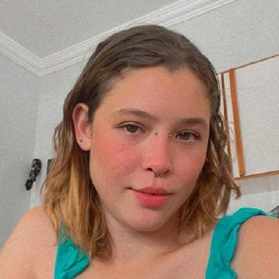
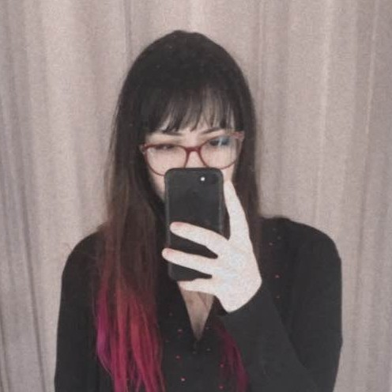

Wendel Duarte
Desenvolvedor Front-End
Análise e Desenvolvimento de Sistemas
Inglês Fluente
$ echo ad astra, per aspera
Programação
PROJETOS
Familiarizado com o desenvolvimento web, utilizo Javascript e ferramentas como React e Electron na criação dos meus projetos.
Polaris
Automatizador de Mensagens
Aplicativo para Linux, macOS e Windows, desenvolvido em Electron. O Polaris combina uma interface atrativa e intuitiva com a funcionalidade da API whatsapp-web.js para o envio de mensagens pelo WhatsApp.
JavaScript
Electron
Node.js
Contribuidores
Wendel
GEEO
Landing Page
Uma landing page empresarial totalmente personalizada, contruída em React.
Visite o site
JavaScript
React
Contribuidores
Wendel
SFE
Dashboard de Pedidos
O Sistema da Ferramentaria Elétrica é um website gerenciador de pedidos desenvolvido para o setor de ferramentaria da Vale, contruído em React.
Visite o site
JavaScript
React
TypeScript
Contribuidores
Wendel
Kezia
Jeni
Animais Carentes
Website
Um site simples e elegante, criado para aprimorar a presença online do abrigo animal Animais Carentes, localizado no estado do Espírito Santo.
Visite o site
JavaScript
HTML
CSS
Contribuidores
Wendel
Kezia
Logomarcas
PROJETOS
Criação de ilustrações e logomarcas em vetores utilizando Adobe Animate. Venho adquirindo proficiência na ferramenta desde 2015.
Música
PROJETOS
Tenho a produção musical como hobby desde 2015. Utilizo o FL Studio, juntamente com seus VSTs e sintetizadores nativos, para alcançar os resultados que imagino.
SOBRE MIM
Olá, me chamo Wendel! Sou desenvolvedor Front-End, entusiasta do open source e um grande apreciador da natureza. Nascido no estado do Amapá, hoje, aos 26 anos, resido em Araquari (SC).
EDUCAÇÃO
Análise e Desenvolvimento de Sistemas
2025 - 2027
ATRIBUTOS
- Inglês Fluente - Capacidade de conversação com nativos.
- Vontade de Aprender - Minha jornada no desenvolvimento web surgiu da curiosidade e dos estudos nas horas vagas no trabalho.
- Relacionamento Interpessoal - Procuro ser um bom ouvinte e oferecer apoio sempre que necessário.
- Disseminador de Conhecimento - Aprecio oportunidades de ensinar e ajudar aos outros.
CONTATO
Sinta-se à vontade para entrar em contato pelos métodos abaixo. Responderei assim que possível!
E-MAIL PESSOAL
wendel.duarte@proton.me
TELEFONE
+55 (47) 9 9192-4211